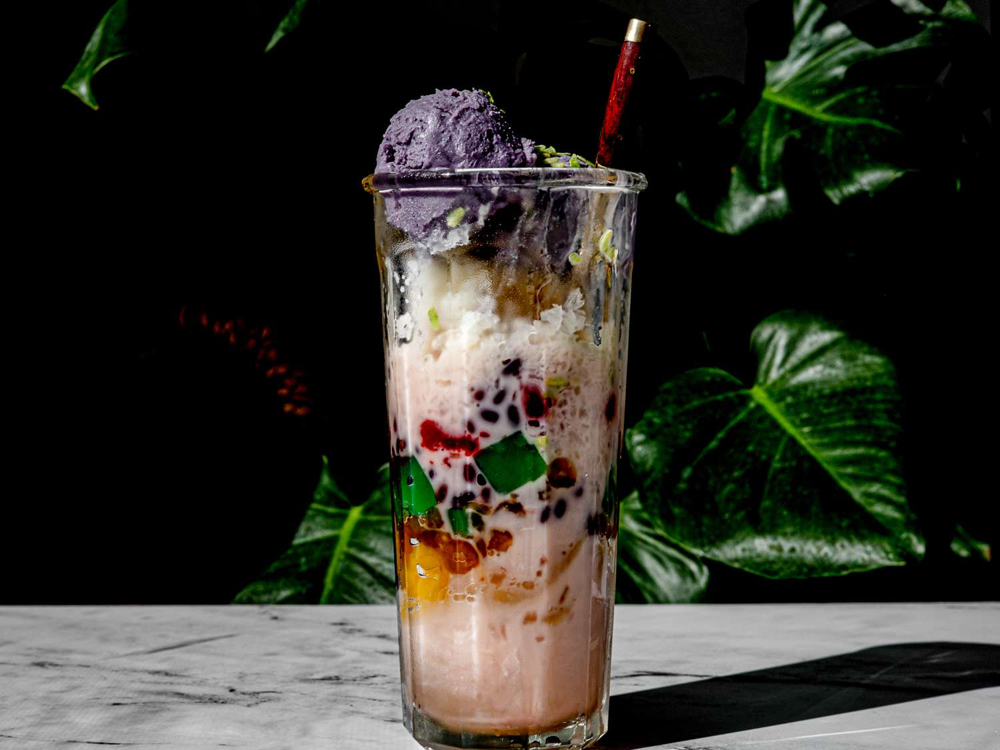

Halo-halo

Stay cool and satisfied with every scoop of Halo-halo!
Halo-halo is a popular Filipino dessert that literally means "mix-mix". It is a sweet and refreshing treat usually made of shaved ice, sweetened evaporated milk, and a variety of toppings. It is often enjoyed during hot summer days.
Ingredients
- Shaved ice
- Evaporated milk
- Nata de coco "Coconut gel"
- Kaong "Sugar palms"
- Sweetened jackfruit
- Swertened bananas
- Sweetened beans
- Tapioca pearls
- Macapuno "Sweetened coconut sport"
- Pinipig "Rice crispies"
- Ube halaya "Purple yam"
- Leche flan
- Ice cream
Steps
- In a tall glass, add a teaspoon of each of your selected ingredients.
- Fill the glass with shaved ice up to the brim.
- Drizzle with milk.
- Add toppings of your choice.
- Serve with long spoon to mix and enjoy!